IB Docs (2) Team
IB Docs (2) Team

Unit 3.4(1) Economics of inequality and poverty
Equality in economics is the way the economic outcomes for different people in society are the same. We often consider equality in the way the income generated by the economic activity of a country is shared out amongst the country’s population. We know from the circular flow of income model that the GDP of a country produces an income that is distributed to different households of that country. But the model does not tell us how the income is shared out.
- Relationship between equality and equity
- The meaning of economic inequality
- Unequal distribution of income and wealth
- Measuring economic inequality using the Lorenz curve and Gini coefficient
- Construction of a Lorenz curve from income quintile data (HL)
- Meaning of poverty
- Difference between absolute and relative poverty
- Measuring poverty: international poverty lines, minimum income standards, Multidimensional Poverty Index (MPI)
- Difficulties in measuring poverty
- Causes of economic inequality and poverty
- Impact of inequality on economic growth, standards of living and social stability
Revision material
 The link to the attached pdf is revision material from Unit 3.4(1) Economics of inequality and poverty. The revision material can be downloaded as a student handout.
The link to the attached pdf is revision material from Unit 3.4(1) Economics of inequality and poverty. The revision material can be downloaded as a student handout.
The difference between equality and equity
Equality
Equality in economics is the way the economic outcomes for different people in society are the same. We often consider equality in the way the income generated by the economic activity of a country is shared out amongst the country’s population. We know from the circular flow of income model that the GDP of a country produces an income that is distributed to different households of that country. But the model does not tell us how the income is shared out.
Many economists, leaders in industry and politicians take the normative view that a more equal distribution of income in society is a good thing. The reality of the world economy is the widening of income inequality. All nations experience income inequality to a greater or lesser extent, where income is distributed unevenly amongst the population with a minority of high-income households accounting for a relatively high proportion of the income or wealth generated by a country.
Equity
Equity in Economics is about fairness in terms of everyone in society having an equal opportunity to achieve an economic outcome. This is another normative economic concept and takes the view that all individuals should have the opportunity to achieve a certain economic outcome. This might mean an individual has the opportunity to get a job that allows them to achieve a certain quality of life. Inequity is unfairness in society that prevents individuals from achieving a particular economic outcome. This might mean a group in society cannot access certain jobs because of their ethnicity, gender or socioeconomic group.
Inequality in the distribution of income and wealth
In all countries, there is an unequal distribution of income and wealth. Although they are quite similar principles there is a distinct difference in terms of:
- An unequal distribution of income means that a greater proportion of the income of the economy goes to the richest households than the rest of the population.
- An unequal distribution of wealth means that a greater proportion of the value of assets in a country is owned by the richest households compared to the rest of the population.
Income is the money a person earns, and wealth is the value of assets a person owns. Examples of the assets people own include houses, shares, bonds and money in the bank.
The world’s billionaires saw their wealth increase by $8.9 trillion last year which is an increase of 19% compared to the previous year. There are currently 1,732 billionaires in the world. China is the country experiencing the fastest growth in billionaires adding two new billionaires per week - a rate almost doubles that of the US and Europe.
The rate of increase in billionaires in the world over the last 5 years is startling with an average growth rate of 17% a year. The number of female billionaires grew by 9% from the previous year. The picture shows Zhang Zetian - China's youngest female billionaire. Zetian has made her fortune in fashion. Women represent 11% of the total number of billionaires overall which, in a sense, illustrates a level of inequity at the most elite level of the world’s population.
 Worksheet questions
Worksheet questions
Questions
a. Define the term equity. [2]
Equity in Economics is about fairness in terms of everyone in society having an equal opportunity to achieve an economic outcome.
b. Explain the difference between inequality in income and inequality in wealth. [4]
Inequality in the distribution of income means that a greater proportion of the income of the economy goes to the richest households than the rest of the population. Inequality in the distribution of wealth means that a greater proportion of the value of assets in a country is owned by the richest households compared to the rest of the population.
c. Explain what the increase in the number of billionaires in the country says about that country's wealth inequality. [4]
Wealth is the value of an individual's assets which can be held in the form of property, company shares and money held in a bank. A billionaire is someone whose assets are valued at more than $1 Billion. If there are more billionaires this probably means greater wealth inequality because a billionaire's wealth is so large relative to the average wealth in society.
Investigation
Research the number of billionaires in a particular country and consider the impact they have on society.
Measuring economic inequality
There are two indicators economists use to measure income inequality in a country.
The Lorenz curve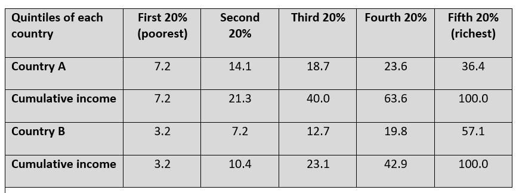
The Lorenz curve is a graphical illustration of the income distribution of a country.
The Lorenz curve divides the population into quintiles and then shows the cumulative percentage of income accounted for by each quintile. The table sets out the income data for Country A and Country B. Each country’s households are set out in ascending order from the poorest quintile to the richest quintile.
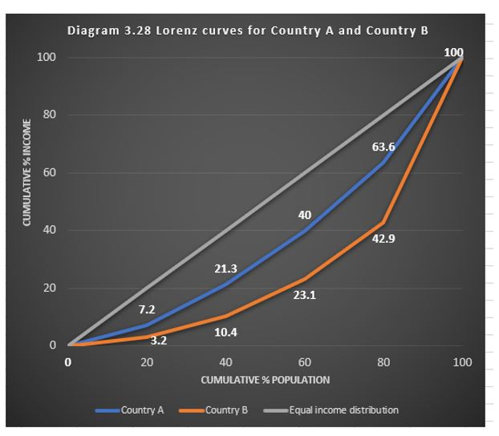
The Lorenz curve graphs the distribution of income by plotting each quintile with the cumulative percentage income. These Lorenz curves for Country A and B are shown in diagram 3.28. From the data in the table, Country B has greater income inequality, and this is shown by the larger deviation its Lorenz curve has compared to Country A from the line of perfectly equal income distribution.Gini coefficient
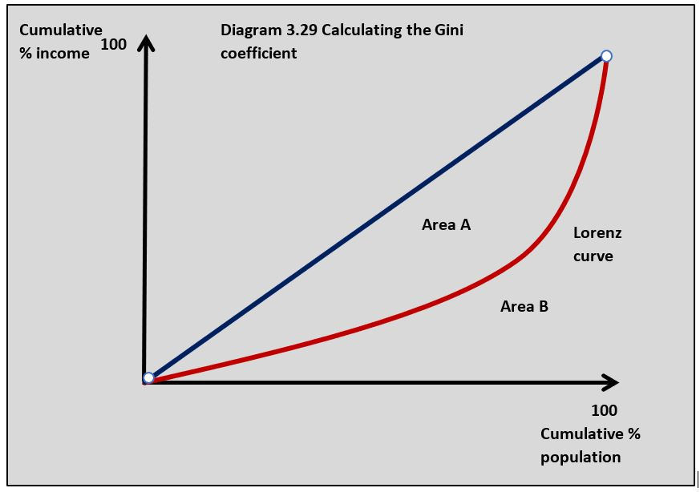
The Gini coefficient can be used to measure the size of a country’s income inequality. It can be calculated by using the Lorenz curve. In diagram 3.29 the area above the Lorenz curve and below the line of perfect income equality is calculated as a proportion of the total area below the line of perfect income equality. In diagram 3.29 this is calculated by the equation:
area A / area A + area B = Gini coefficient
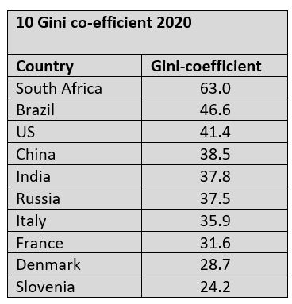
This Gini coefficient value can either be considered as a percentage or a value between 0 and 1. If the answer is 0 there is perfect equality and the closer the Gini coefficient is to 1 the more uneven the income distribution of a country. The table opposite shows the 10 countries in the world with the highest Gini coefficient values.
We are seeing widening income inequality in South Africa. Information from the World Inequality Database showed that the richest 1% of South African households earn 20% of all income in the country and the top 10% take home 65%. The remaining 90% of South African households receive only 35% of the country’s income.
This is not just an income inequality issue. An inequality trends report shows huge inequality in South Africa in terms of ethnicity and gender. White people in South Africa earned on average R24,646 per month, which is three times the R6,899 of black people. In South Africa women on average earn 30% less than men.
With a Gini coefficient of 0.63, South Africa is one of the most unequal nations in the world and this is a key factor behind some of the country’s most challenging economic and social problems.
Worksheet questions
Questions
a. Using a Lorenz curve diagram outline how the Gini coefficient is calculated. [4]
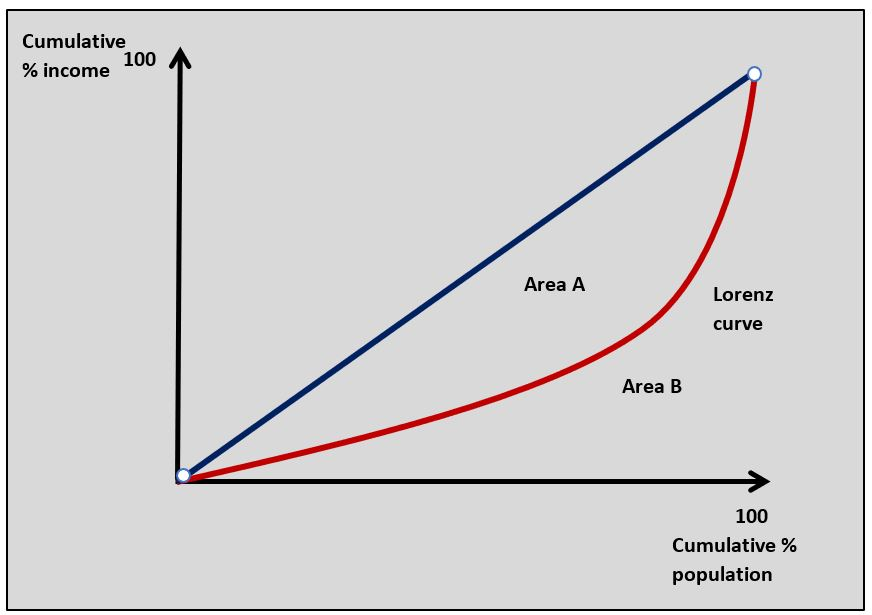
The Gini coefficient is calculated from the Lorenz curve diagram using the following calculation:Area A / Area A + B
b. Outline what South Africa's Gini coefficient indicates about the level of income inequality in the country. [2]
South Africa has the highest Gini coefficient in the world at 0.63 which indicates that it has a very unequal distribution of income.
c. Using a Lorenz curve diagram explain the impact of an increase in income inequality. [4]
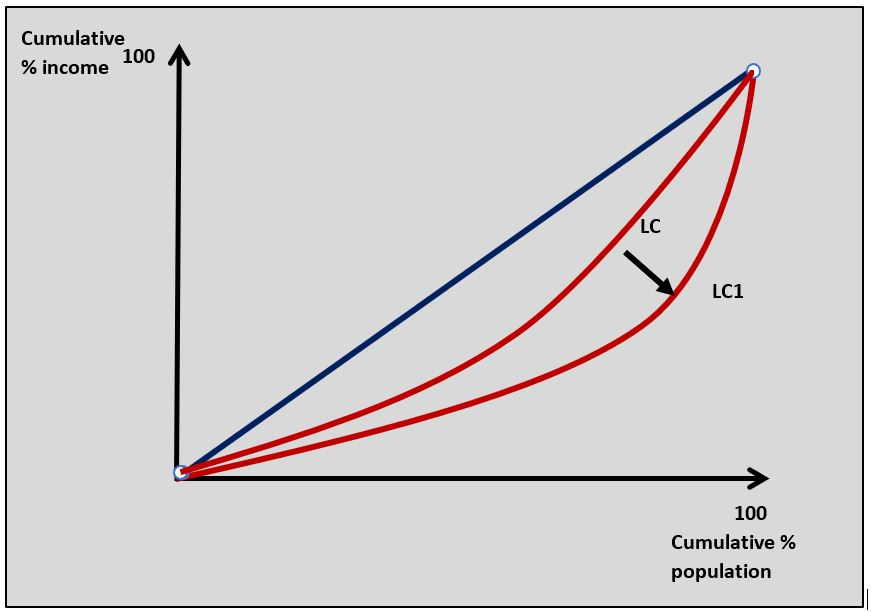
As income inequality increases in a country, the Lorenz curve in the diagram moves further away from the line of perfect equality and the Gini coefficient value increases.Investigation
Research another country in the world with a high Gini coefficient and consider some of the economic and social problems it might cause.
Meaning of poverty
The United Nations defines poverty as the ‘denial of choices and opportunities and a violation of human dignity. A household in poverty lacks the basic capacity to participate effectively in society’. This definition of poverty can be viewed as households in a country lacking the income needed to achieve a basic standard of living.
Poverty can be considered in two ways:
Absolute poverty
Absolute poverty exists when household income is below the level needed to meet a person’s basic needs of life including housing, food, safe drinking water, education and healthcare, etc. It is difficult to state an income level where someone experiences absolute poverty, but an income of less than $700 a year or $2 a day is given by the UN, although this will vary from country to country because of different price levels.
Relative poverty
Relative poverty is where a household’s income is significantly below a country’s average income. Many countries define relative poverty as a person that earns less than 50 per cent of the average household income. Households in this position may not be in absolute poverty, but they often do not have enough income to afford anything more than the basic goods and services needed to sustain their lives.
Measuring poverty
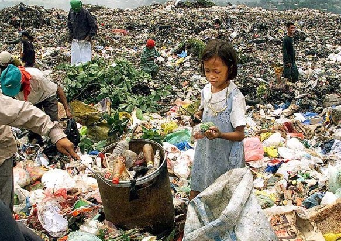
Countries can measure poverty using the following approaches:Poverty lines
A poverty line is the minimum level of income needed for a basic standard of living in a country. The World Bank international poverty line is set at an income of $1.90 per day. Different nations set their own poverty lines based on relative poverty. For example, a country might set a relative poverty line at 50 per cent of average incomes and then the percentage of people who fall below this level is used to measure the level of relative poverty.
Multidimensional Poverty Index (MPI)
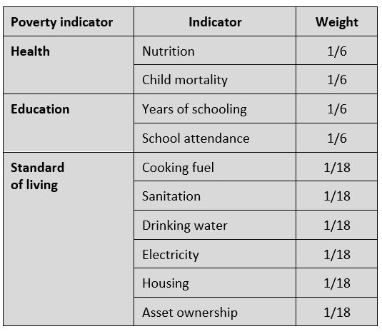
The Multidimensional Poverty Index (MPI) uses a number of weighted criteria to measure poverty in a country based on a survey of households. This data is aggregated to give a national measure of poverty. The lower the MPI of a country the greater the level of poverty.
The criteria used to measure the MPI are set out in the table. These criteria are used to measure poverty by applying a set minimum level for each indicator. For example, the standard of living poverty indicator, cooking fuel, would measure poverty based on the number of households cooking with dung, wood, charcoal or coal and the nutrition indicator would be based on the number of people in a household who are undernourished.
Problems of measuring poverty
The following factors make it difficult to measure the level of poverty in a country:
- Like a lot of economic data, measuring poverty is based on a survey which means using a sample of households to represent the whole population. All samples come with a sampling error, so there is inevitably some inaccuracy in the data.
- The variety of different methods used to define poverty such as relative and absolute poverty make it difficult to measure. Using the phrase ‘to meet a person’s basic needs’ is open to a variety of interpretations. We know access to basic food and shelter is a basic need but is owning a mobile phone?
- Some of the most powerful human feelings associated with poverty are almost impossible to measure. The anxiety of not knowing where your next meal is going to come from is real, but measuring that anxiety is extremely difficult.
- Governments draw lines of absolute and relative poverty but they are very difficult to apply in reality. A certain level of income per day might be a very low but sustainable income in some countries, but completely inadequate to live on in others.
- Poverty data is open to manipulation by governments who want to show a falling level of poverty in their country. The income value of absolute poverty should rise with inflation, but it is in the interests of governments not to do this because it might make the numbers in absolute poverty increase.
- Attempts to use a weighted index to measure poverty, such as the MPI, are effective in representing the broad-based nature of poverty, but increasing the number of indicators and then weighting them is always going to create difficulties. For example, how do you decide on the weighting of asset ownership or sanitation in measuring poverty?
Causes of inequality and poverty
It is possible to combine the causes of inequality and poverty in society because the cause of both is so closely related. For example, if one person is the owner of a highly valued property then they might earn plenty of income from renting the property. If another person owns no property then instead of earning rent they will pay rent and this would lead to a high level of inequality between two people. The person who owns no property is also more likely to live in poverty.
Inequality of opportunity
Inequality of opportunity means people do not have the same access to a good quality of life in terms of income, education, employment and healthcare. Without these opportunities, people get stuck in low-paid work with little chance of progression, and this means they cannot access good healthcare and education. Lack of opportunity can come from a parental background, education, gender, ethnicity and social class. High-income households, for example, can pay for the best education for their children who will go on to the best universities, which in turn secures them highly-paid employment and they can then do the same for their own children.
Resource ownership
Low-income households own very little or no capital at all. This means their only source of income is from low paid work. High-income households on the other hand often own assets and are holders of wealth. This can be in the form of property or shares in companies that earns them a stream of income in the form of rent on property and dividend on shares. Wealthy individuals can use their surplus income to buy more assets which earns them even more income.
Human capital
High-income individuals tend to work in high-skilled jobs producing products for firms that can make those businesses high profits. Skilled workers in these situations are valued highly by the businesses that employ them and they are paid a high wage for the work they do. Low-income individuals are often in low-skilled jobs doing work that does not bring as much profit to the business that employs them, and they are paid a lower wage. Another important aspect of this is that highly skilled workers are scarcer in the labour market than the low skilled worker, which gives the highly skilled worker a stronger bargaining position when negotiating their wages.
Discrimination
Inequality can occur because of discrimination by employers. This can be based on ethnicity, gender, age and socioeconomic status. Women in most countries are paid significantly less than men partly because of discrimination. Inequality can also take place in education. Universities in some countries have been accused of not allowing access to students from ethnic minorities and low-income households.
Status and power
High-income individuals often reach position of political influence. This can be done by directly running for office and gaining political power. Donald Trump and Hilary Clinton both come from wealthy backgrounds and spent about $100 million each on their campaigns for the last Presidential election in 2016. It is much more difficult for low-income individuals to reach positions of power. Wealthy people can also influence the political process by lobbying and financing politicians to make decisions that favour them and their organisations.
Government policies
Government can make policy decisions that can widen income inequality. Reducing direct taxation will normally favour high-income households because they earn much more taxable income than poorer households. Cutting income tax tends not to benefit low-income households that much because they are probably paying very little income tax anyway. Governments that cut spending on public services such as education and healthcare will have more effect on the poor who rely on these services than richer households. Low-income households will also be adversely affected when governments use market-based supply-side policies such as reducing the lower of trade unions and removing regulations that protect employees.
Globalisation
Globalisation often involves greater competition in domestic markets from foreign competition as trade barriers are removed between countries. This increase in competition often favours producers in low-wage economies that outcompete producers in higher-wage countries. This often means producers who cannot compete either shut down or reduce wages in an attempt to compete. This process has the effect of driving down incomes in many countries, widening income inequalities and leading to poverty.
On 25 May 2020 video footage showed a white police officer kneeling on an African American man's neck while he was pinned to the floor outside a shop in Minneapolis, Minnesota. During this arrest, George Floyd said more than 20 times he could not breathe as he was restrained by the officers. After nearly 9 minutes of having the officer's knee on his neck, he had a heart attack and died. This event sparked furious protests and riots in Minneapolis and across America. Whilst many of the protestors were peaceful there was considerable violence in many US cities.
Racial inequality in the way African Americans are treated by the police in the US is one reason for the civil unrest that followed Floyd's death. However, income inequality must also be a factor. If you do not have a job or you are on a very low income and you see growing affluence amongst an elite few then this is bound to build resentment. Resentment that needs just one tragic incident to create countrywide civil disorder.
Questions
a. Outline two types of inequality that might have caused the civil unrest that followed the death of George Floyd. [4]
Racial inequality in the US will have been important in the civil unrest because of the relatively low incomes and opportunities of the Black population relative to the white population in the US.
Income inequality may have been important because the civil unrest could have been a reaction to poverty in US cities.
b. Explain how the multidimensional poverty index is used to measure poverty. [4]
The Multidimensional Poverty Index (MPI) uses weighted criteria to measure poverty in a country based on a survey of households. For example, the criteria used can be sanitation, child mortality and years of schooling. Each of the criteria is weighted because of their relative importance and then converted into an index number. The lower the MPI the greater the level of poverty.
c. Explain three possible causes of poverty in the US. [10]
Answers might include:
- Definitions of absolute and relative poverty.
- No diagram is required for this question.
- An explanation that inequality of opportunity means people do not have the same access to a good quality of life in terms of income, education, employment and healthcare.
- An explanation that a lack of ownership capital makes it difficult for people on low incomes to start a business and generate wealth.
- An explanation that low levels of education and training make it difficult for low-income households to access high-paying employment.
- An explanation that discrimination in terms of ethnicity and gender makes it difficult for poorer people in these groups to access high-paying employment.
- Explanation that globalisation has meant people on low incomes have had their wages held down by low-cost foreign competition.
Any three causes can be used to answer the question.
Investigation
Find out about the inequality issues associated with the major cities in the US.
Impact of income and wealth inequality
Social stability
Countries with very uneven income distributions often suffer from high crime rates. It can be argued that wide income inequality creates a sense of unfairness in society and this can lead to an increase in crime and social unrest. Poor people may also be more likely to be pushed towards crime because it may be the only way to make a sustainable living. For example, poor people might sell recreational drugs in communities where there are few job opportunities.
Economic growth
A high level of income and wealth inequality can restrict economic growth in two ways:
Demand-side
Domestic aggregate demand does not grow as quickly when there is wide inequality and a significant proportion of the population is on relatively low incomes. Low-income households tend to spend a high proportion of their income so if their income growth remains relatively low then this prevents aggregate demand from growing.
Supply-side
Where income and wealth inequality results in a high proportion of low-income households then this might slow the growth in aggregate supply. Low-income households may not be able to access the education, training and healthcare needed to support them as productive workers. If people in the labour force do not have the income needed for effective education and training, then they will not be as skilled and as productive as workers. People on low incomes may also lack the financial incentive to be as productive as if they were able to earn higher wages.
Standards of living
An uneven income distribution with a high proportion of low-income households can reduce the quality of life in a country. High levels of poverty amongst poorer households have a negative effect on their welfare in terms of their access to food, housing, health and education. There is also evidence that income inequality in society has a negative effect on mental health and personal happiness amongst poorer households.
Inquiry case example
What is it like to live in absolute poverty?
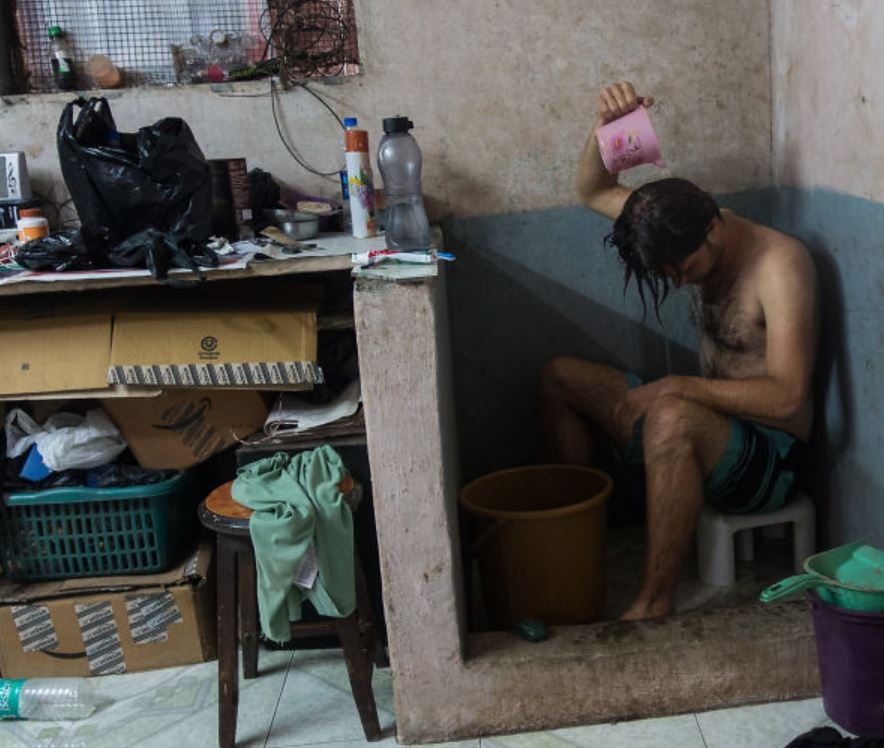
Visiting the Dharavi slum in Mumbai changes the way you look at poverty. As a relatively well-off person from the UK, nothing really prepares you for the shock of entering one of the poorest communities in the world. One aspect of living in the slum that really focused my mind was keeping clean. I am used to a modern, luxury (yes luxury) bathroom at home with a power shower where the heat and flow never deviate from the comfort level you set it at. I also shower twice or even three times a day. Showering is functional, but it is also a pleasurable experience.Forget showers, in the Dharavi slum. There is an average of 1 toilet for every thousand people. When you consider animals living in the same quarters as people you can see that ‘keeping clean’ is going to be a challenge. For me, washing and sanitation are as much about comfort as anything else. But just think about the health issues associated with poor quality sanitation and drinking water let alone taking a luxury shower.
Question
Using a real-world example, evaluate the view that the most significant impact of income inequality is the way it limits growth in the long-run aggregate supply. [15]
Answers might include:
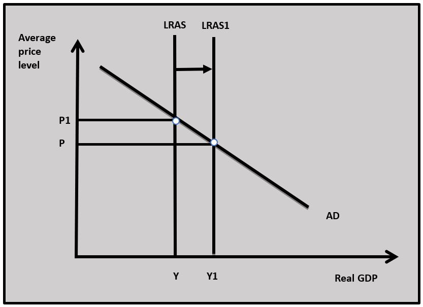
- Definitions of income and inequality and long-run aggregate supply.
- A diagram to show the LRAS
- An explanation that income inequality limits the growth in LRAS because low-income households do not have enough access to education, training and healthcare which makes them unproductive workers. Low-income people also lack the capital to start their own businesses to contribute to the LRAS. These two factors mean the LRAS cannot increase in the way shown in the diagram.
- An example to illustrate the limits on the growth of LRAS. In this case, India could be used.
- Evaluation might include discussion of the other implications of income inequality such as the demand side implications of a country having a high proportion of people on low incomes who cannot add as much to AD as people on higher incomes. Also discussion of the implication of low incomes on the political and social stability of a country.
Investigation
Research into the living issues of another area of the world where people live in absolute poverty.
The problems of poverty and inequality are two of the most significant economic challenges societies have to manage. The question facing governments trying to deal with poverty and inequality is the extent to which they intervene and the nature of their intervention. Norway is a country where government expenditure accounts for 47.5% of GDP. The result of this high level of state intervention is one of the lowest rates of poverty in the world at 0.5% and one of the most equitable distributions of income with a Gini coefficient of 0.25.
Investigate into another country and examine the relationship between government spending as a percentage of GDP and the country's poverty rate and Gini coefficient.
Which of the following statements is the best definition of equity?
Which of the following statements is least likely to be true of a country's Lorenz curve?
When an economy grows evidence suggests income inequality increases which would move the Lorenz curve further from the line of perfect equality.
Which of the following is not true on the Lorenz curve diagram?
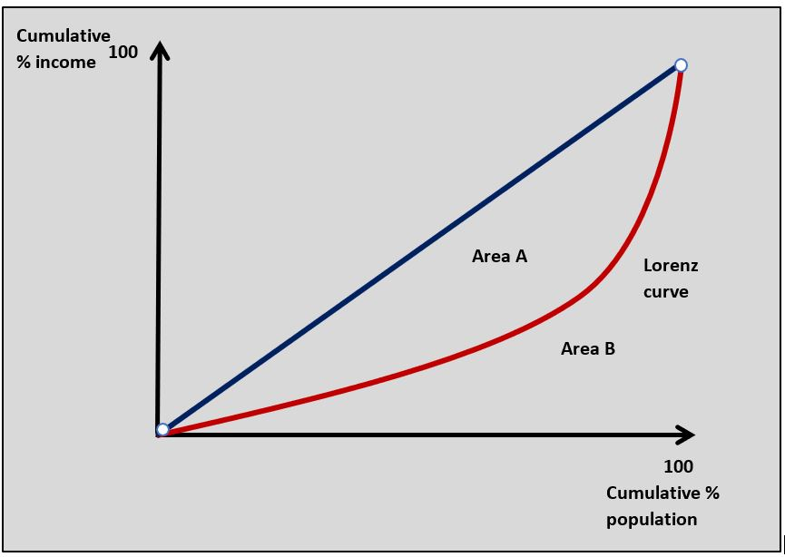
Area A / Area A + B = Gini coefficient
Which of the following best describes a situation where a person earns less than 50 per cent of average household income?
Which of the following is least likely to be a cause of income inequality?
State provision of healthcare is likely to provide support for households on low incomes.
Which of the following is least likely to be a consequence of rising income inequality?
When income inequality increases the value of the Gini coefficient will increase.
Country Ys Gini coefficient rises from 0.35 to 0.37. Which of the following is true?
A rise in Country Y’s Gini coefficient shows an increase in income inequality in the country.
Which of the following measures is likely to be the best measures of poverty in a country?
The MPI (multidimensional poverty index) is a widely used measure of poverty.
Which of the following is most likely to lead to a more equal distribution of income?
A decrease in company directors' pay will make income distribution more equal because it will reduce the income of the highest earners.
Which of the following is most likely to improve the level of equity in a country?
In increase in government spending on education might help to improve the opportunities for low income citizens to improve their welfare.
 Twitter
Twitter
 Facebook
Facebook
 LinkedIn
LinkedIn